Selected Work
National Black Justice Coalition
Current high-fidelity designs for our Minimum Testable Product–a web platform for Black, LGBTQ/SGL focused and other similar organizations to connect with other organizations, as well as a tool for people to explore these organizations–designed for the National Black Justice Coalition. This project has not been completed yet–Blueprint projects span an entire school year rather than just one semester. Read more here
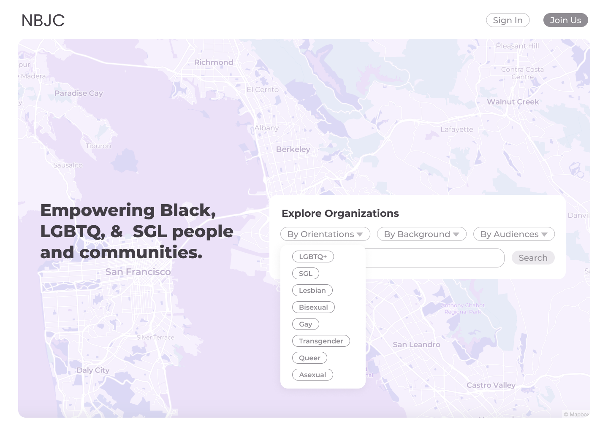
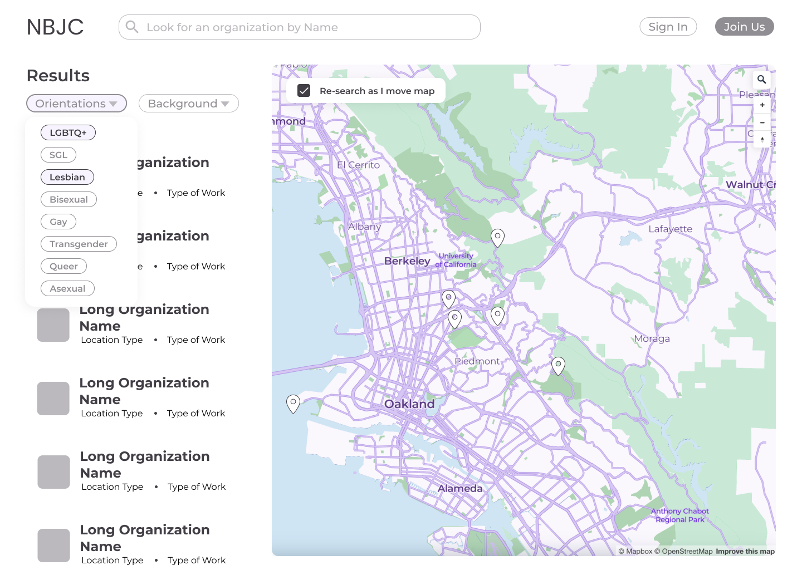
Mobius: Re-imagining a public transit application
This was my first ever "design" project for a class I took about Human Centered Design. Our goal was to find some problem we had experienced and come up with some sort of solution using the human centered design approach.


Kingpin Donuts Redesign
This redesign of a local donut shop was for a project for my Web Development and Design class. I created a few different views to showcase basic information of the shop, and then a feature to view the menu and different flavors. A full write-up on design choices is in the Figma → as well as the iterations from lo-fi to hi-fi. After designing the site, I coded it out primarily with HTML/CSS.
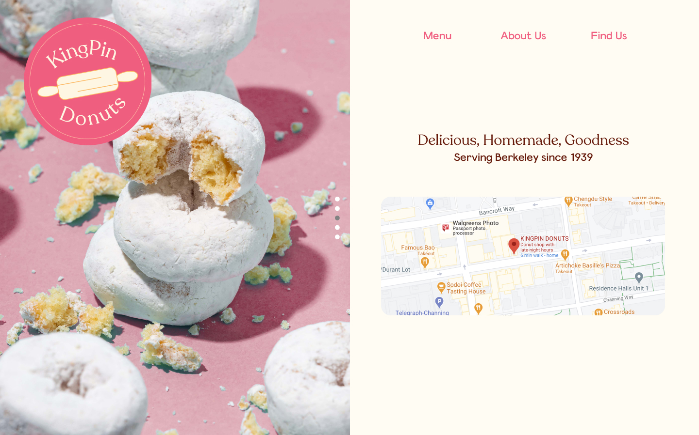
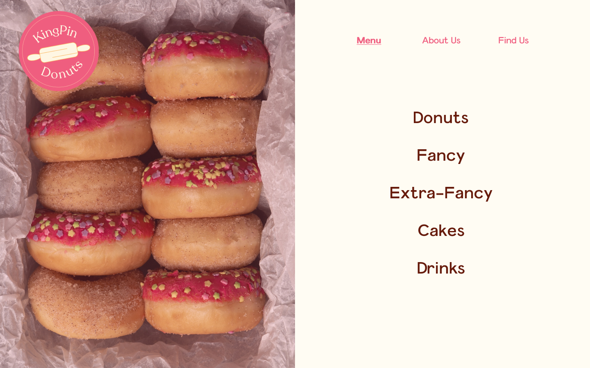
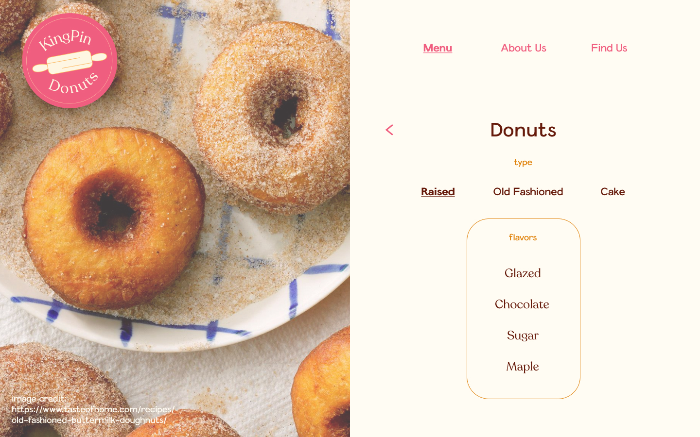
 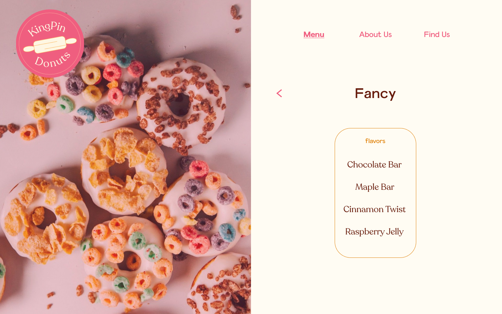
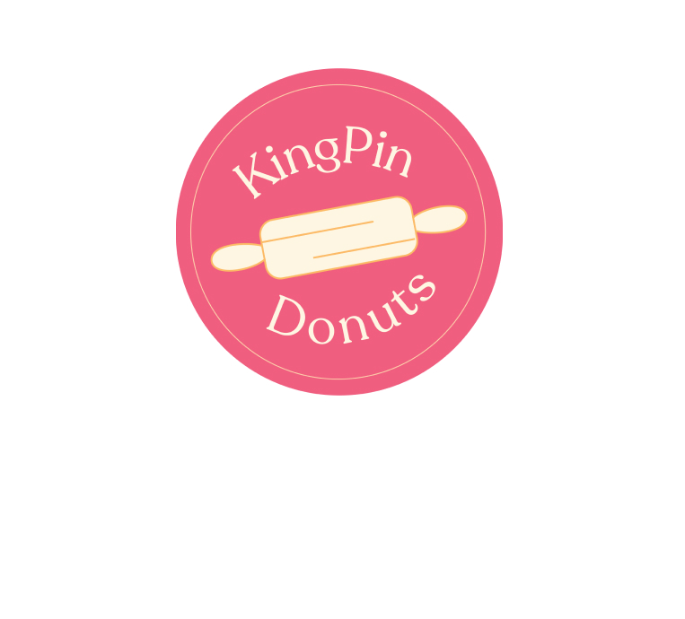
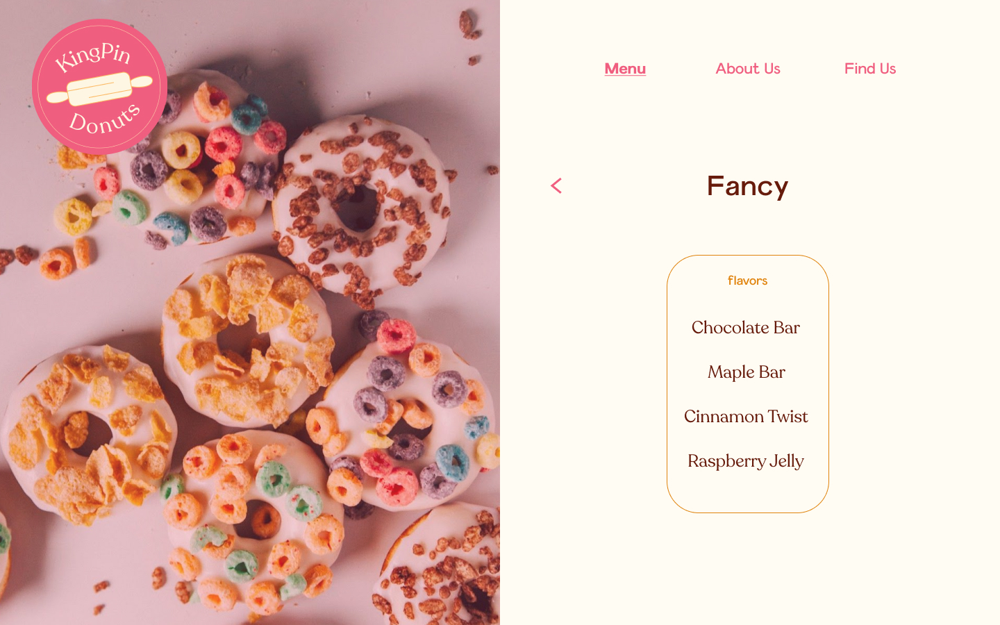
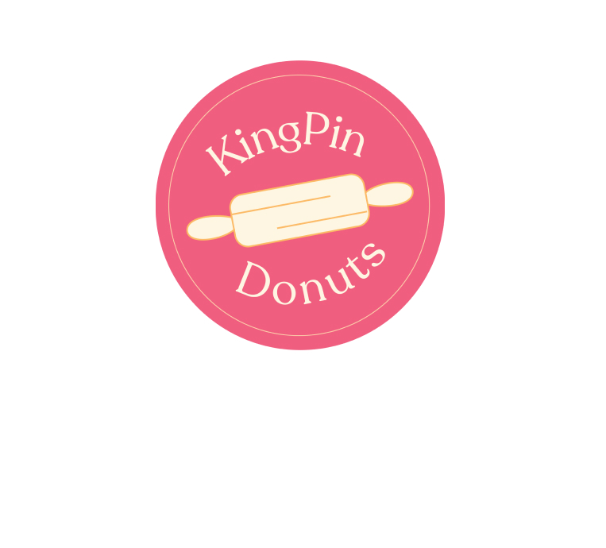
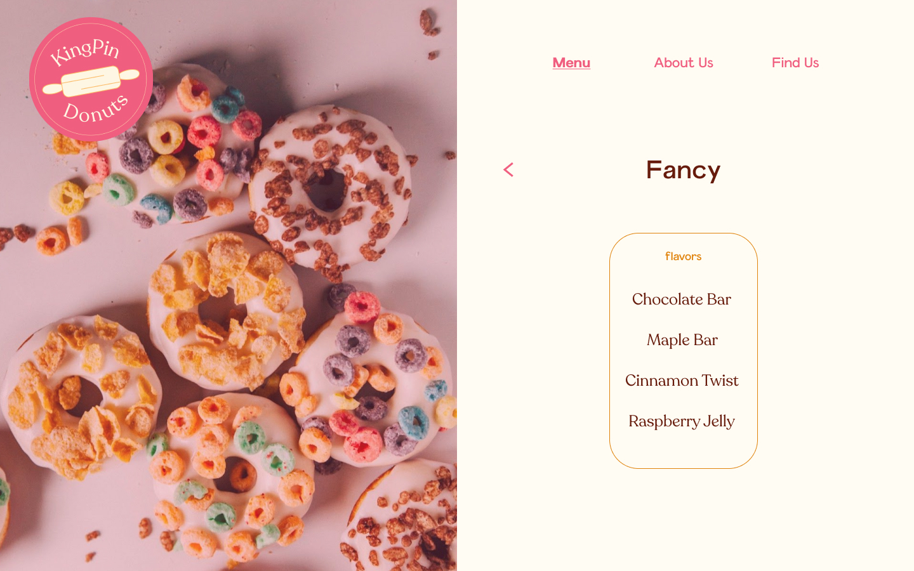
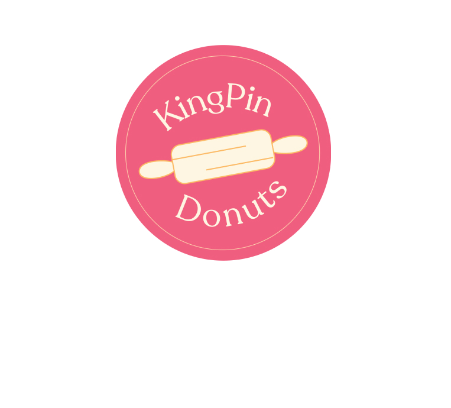
Freelance/Other: Visual and Graphic Design
This is a collection of some of the various illustrations or things I have created, either for fun or for organizations I have been involved with in the past!
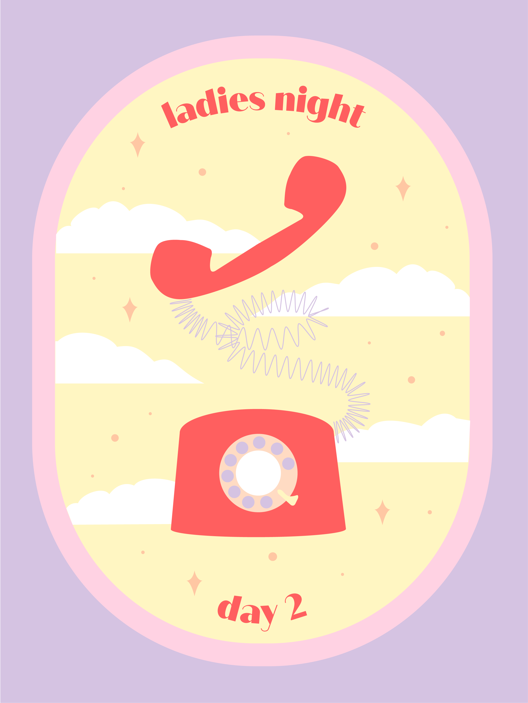
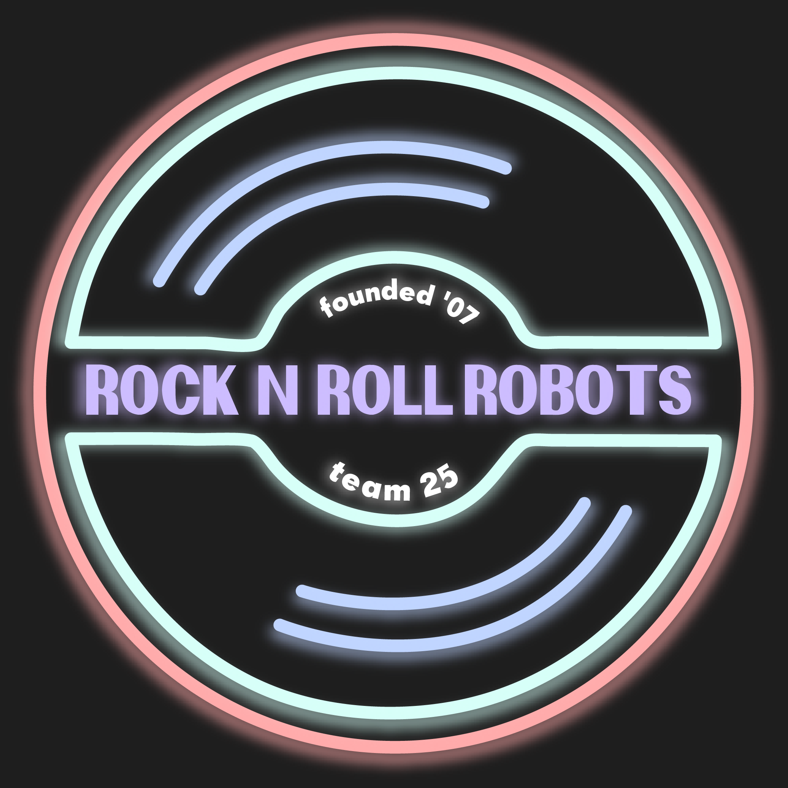